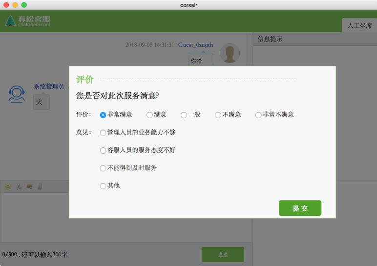

春松客服
全渠道智能客服，客服系统是企业的重要工具，尤其是移动互联网时代，企业需要响应来自任何地点任何时间的客户，渠道也是多样性的。企业的口碑至关重要，企业服务需要在客户获得、客户激活、客户留存等阶段无懈可击。不管是微信公众号，还是电话外呼，或是Telegram Messenger。
产品定义
智能客服系统是拥有机器人客服、呼叫中心、数据分析、CRM等功能于一身的新一代客服系统。将智能机器人与人工客服完美融合，同时整合了多种渠道，结合CRM系统，为客户打标签，建立客户的人群画像等，帮助企业向客户提供更加专业客服服务。智能客服系统是一个有能力打通企业各种应用的软件，尤其是市场、销售、售后相关的软件。
Chatopera推出的智能客服产品，即春松客服有下面的亮点：
- 开放源码，Apache2.0授权证书
- CRM模块：管理联系人，客户
- 支持IM和呼叫中心
- 机器人客服，与智能问答引擎集成
- 会话弹屏，联系人打标签、笔记
- 数据分析，优化业务
- 支持公有云和私有化等多种灵活的部署方式
- 以容器化基础，安装使用，卸载等非常简单
安装方式：
- 单服务器部署：个人/开发者，体验服务
- 公有云部署：青云AppCenter，支持秒级计费、动态伸缩、备份恢复、高可用性、监控告警。
- 私有部署：部署到企业IT基础设施。
以上安装方式在文档的其余部分作详细介绍。
Chatopera也提供面向企业客户的现有客服系统的集成开发服务，欢迎洽谈。
演示环境
该地址任何人都可以访问，请勿创建真实信息和修改密码。
演示环境是为了帮助大家了解春松客服，一下是地址和管理员账号。
| 网站 | 用户名 | 密码 |
|---|---|---|
| http://cc.chatopera.com/ | admin | admin1234 |
单服务器部署
满足个人和开发者快速部署，体验产品。
公有云部署
青云AppCenter 是一个云计算环境中的应用交付与运营管理平台，同时包含一整套用来开发云应用及云化已有应用的框架。让应用提供商和开发者可以从资源层管理的复杂性中脱离出来，从而更高效地开发、部署、运维及管理所提供的应用，让用户可以便捷地选择需要的应用来构建和管理自身的业务。
春松客服的公有云部署默认采用青云AppCenter并充分发挥PaaS平台的强大计算能力，提供支持海量用户并发访问的春松客服实例，具体详细阅读春松客服上架青云AppCenter， 获得详细介绍，包括服务部署、管理等。
企业私有部署
部署到企业内部IT基础设施，获取服务镜像
春松客服的拓扑结构介绍：
| 组件 | 描述 | 镜像 | 开源码 |
|---|---|---|---|
| contact-center | 客服系统 | DockerHub | Github |
| cc-switch | 电话渠道软交换，基于FreeSWITCH | DockerHub | Github |
| mysql | 数据库 | DockerHub | x |
| redis | 数据库 | DockerHub | x |
| elasticsearch | 检索服务 | DockerHub | Github |
依赖环境
智能问答引擎是使用docker镜像进行分发的，所以，只要是docker v12+ 版本支持的操作系统都可以运行智能问答引擎服务，对于更详细的操作系统的兼容列表，请参考Docker Community Edition (CE)。
硬件方面，Chatopera推荐使用4Core CPU(Intel E5 or better)， 16GB Memory，128GB Disk运行服务。
智能问答引擎的docker镜像可以安装在docker服务中，或docker registry中。然后通过容器管理框架，比如kubernetes、Apache Mesos或docker compose。
在本文档中，介绍使用docker compose的方式部署和管理服务，docker compose是轻量级的docker服务编排方案。
- docker 版本
Docker version 18.03.1-ce, build 9ee9f40
安装文档，注意：docker为开源码程序，本文档使用社区版本（Docker CE）。
- docker-compose
docker-compose version 1.21.1, build 5a3f1a3
安装文档。
安装
假设docker已经被安装好，并且其进程已经启动，在命令行终端，执行下面命令：
git clone https://github.com/chatopera/cosin.git cd cosin ./scripts/start.sh
上述命令执行后，查看各个服务是否已经启动成功。
docker-compose ps
智能客服系统的登录地址是：
http://服务器IP地址:8035
默认管理员用户名： admin， 密码：admin1234
生产环境安装建议：
| 事项 | 内容 |
|---|---|
| 部署方式 | 服务端软件使用Docker容器分发，支持公有云环境/本地服务器部署 |
| 网络带宽配置要求 | 本地内部办公网100兆交换，服务器之间千兆交换 |
| 操作系统、相关软件要求 | 最小化部署：Ubuntu 16.04或者其他服务器系统 , 资源要求为：8核CPU，16G内存 |
| 终端配置要求 | 座席电脑的配置8G内存，500G硬盘，I5 CPU，支持windows 7 或者windows10 |
| 服务方案 | 提供系统版本升级建议，优化建议等技术支持服务 |
停止服务
完成磁盘路径的创建后，就可以启动服务了。
在命令行终端中，
cd cosin docker-compose down
重启服务
在命令行终端中，
cd cosin docker-compose restart
开源项目
春松客服是一个开源的项目，项目地址：
https://github.com/chatopera/cosin
在上面的地址，您可以
- 下载项目开源码
- 通过README.md了解更多项目信息
- 通过Wiki获得开发文档
- 通过Issue提问
- 通过Pullrequest贡献代码
- 通过Issue了解开发状态
产品介绍视频
《春松客服产品系列视频》
| 序号 | 内容 | 腾讯视频 | 百度网盘 |
|---|---|---|---|
| No. 1 | 产品概述 | 观看 | 下载 |
| No. 2 | 安装部署 | 观看 | 下载 |
| No. 3 | 功能演示 | 观看 | 下载 |
| No. 4 | 账号体系 | 观看 | 下载 |
| No. 5 | 客户关系管理 | 观看 | 下载 |
| No. 6 | 即时通信 | 观看 | 下载 |
| No. 7 | 呼叫中心 | 观看 | 下载 |
| No. 8 | 数据报表 | 观看 | 下载 |
当前，Chatopera提供春松客服的定制开发或私有部署服务，有合作意向的企业联系下面邮箱，进行洽谈：
洽谈内容包括：
开源社区合作
概念验证
试用申请
其他商业合作
对于企业服务，可提供发票。
客服应答
客服人员和消费者建立连接，并完成对话的聊天室，是客服系统的核心之一。除了建立连接的速度，消费者的用户体验也是在聊天的过程中体现的，当服务场景需要智能化和自动化时，也是围绕聊天室进行的。因为不同客户的业务需求不同，聊天室针对业务需求有不同的设计，下图表示常见的状态：
排队：人工坐席繁忙，消费者接入聊天室时没有空闲的客服人员接起会话，这时，消费者往往会等待，在等待的过程中输入问题。此时消费者不能断开，断开后重连有可能重新排队。
活动：人工坐席加入会话，开始和消费者聊天，解答问题，并且有可能进行几句寒暄。
转接：当前服务人员有时会需要其他工作人员协助，往往也会直接将消费者转接到另外一名客服人员。这时，聊天室就被另外一名客服人员接管。
关闭：聊天结束后的一种状态，代表服务未顺利完成，很可能对消费者问题没有解决或消费者离开聊天室。
完成：聊天结束后的一种状态，代表服务顺利完成，比如消费者得到了满意的回答，关闭聊天室。
账号体系
进入春松客服后台界面，输入默认的账号密码(用户名: admin, 密码: admin1234)，点击立即登录。
进入春松客服首页
创建账号
创建用户账号：系统 -> 系统概况 -> 用户和组 -> 用户账号 -> 创建新用户
提示:
电子邮件: 需要有效的格式
密码: 字母数字最少8位，手动录入
手机号: 全系统唯一
- 用户分为管理员和普通用户
- 坐席分为一般坐席和SIP坐席，普通用户与管理用户都可以成为坐席，SIP坐席是在多媒体坐席的基础上
每个账号必须分配到一个部门下，以及关联到一个角色上，才可以查看或管理资源，请详细阅读【组织机构】和【角色】管理
创建普通用户
- 创建多媒体坐席
- 创建管理员
- 创建呼叫中心坐席
查看账号
查看用户账号列表：系统 -> 系统概况 -> 用户和组 -> 用户账号
点击操作一栏中的“编辑”“删除”，可以对当前用户列表中的所有用户的信息进行编辑或者删除
创建部门
创建部门：系统 -> 系统概况 -> 用户和组 -> 组织机构 -> 创建部门，并且可以启用或关闭技能组
- 名词解释：
部门 需要创建的部门名称
上级机构 选择上级部门
启用技能组 这里启用与否，主要决定当前组织结构是否具有外呼的权限
更新、删除部门
部门列表：系统 -> 系统概况 -> 用户和组 -> 组织机构
编辑(修改)部门：系统 -> 系统概况 -> 用户和组 -> 组织机构 -> 修改部门
删除部门：系统 -> 系统概况 -> 用户和组 -> 组织机构 -> 删除部门
管理部门人员
部门添加用户：系统 -> 系统概况 -> 用户和组 -> 组织结构 -> 选中一个部门 -> 添加用户到当前部门
可以把已经存在的 用户账号 添加到一个特定的部门中
一个用户账号只能隶属于一个部门
设置部门地区
部门地区设置：系统 -> 系统概况 -> 用户和组 -> 组织结构 -> 选中一个部门 -> 地区设置
角色设置
创建角色：系统 -> 系统概况 -> 用户和组 -> 系统角色 -> 新建角色
名词解释：
角色 系统中用户的操作权限是通过角色来控制，角色可以理解为具备一定操作权限的用户组；
可以把一个或者更多的用户添加到一个角色下；
可以给一个角色设置一定的系统权限，相当于这个角色下面的用户有了这些系统权限；
编辑(修改)角色：系统 -> 系统概况 -> 用户和组 -> 系统角色 -> 修改角色
删除角色：系统->系统概况->用户和组->系统角色>删除角色
角色添加用户：系统->系统概况->用户和组->系统角色>添加用户到角色
 |
权限管理
根据角色和部门进行权限检查：
- 管理员可以管理所有资源
- 管理员可以创建部门/角色/人员，人员可设置为是否是“管理员”。
- 每个人最多在一个部门中
- 组织机构支持层级的树状结构
- 角色包含对不同资源的读写权限
- 资源如联系人，客户等是根据部门进行隔离的
- 资源如系统配置，组织机构管理等是不隔离的
假设组织机构如下：
- 联系人
联系人是被隔离的资源。
- 李四所能看到的联系人全集是A部门及其附属部门所创建的全部联系人；但是李四究竟能不能看到则取决于他被赋与的角色有没有看到联系人的权限
联系人的权限包括：我的联系人，全部联系人，今日新增，本周新增，等. 假如李四被赋予“全部联系人”权限，那么他能看到A部门及其附属部门所创建联系人。
- 李四看不到B部门的联系人，张三看不到A部门的联系人。 - 李四能看到刘一创建的联系人，刘一看不到李四创建的联系人。
- 系统设置
系统设置是不被隔离的资源。 如果李四和张三都被赋予了"系统管理"的权限，二者看到的系统管理面板是一致的。
客户关系管理
新建客户：左侧菜单 -> 全部客户 -> 新建客户
这里客户信息包括“基本信息”，“企业信息”，“联系人信息”； 其中“联系人信息”，会同步到 左侧菜单->全部联系人；
编辑客户：左侧菜单 -> 全部客户 -> 客户列表 -> 选中一个客户 -> 点击“编辑”按钮
只能更新“基本信息”，“企业信息”； 需要更新 “联系人信息”，请移步到 左侧菜单->全部联系人；
联系人笔记
进入联系人列表，选择一个联系人，点击联系人姓名，进入详情页面。 在详情页面，编辑联系人笔记，记录来往历史。
删除客户：左侧菜单 -> 全部客户 -> 客户列表 -> 选中一个客户 -> 点击“删除”按钮
客服坐席设置
- 确保需要作为坐席的用户具有“多媒体坐席”的权限；系统->系统管理->用户和组->用户账号->选中该用户->编辑，就可以设置“多媒体坐席
- 需要把 “坐席工作台” 授权给此用户；
- 保证该坐席用户已经登录系统，并且将自己的坐席状态设置为”就绪”。
网页聊天控件
提示：
网页聊天支持可以适配移动设备浏览器，桌面浏览器。
可以在电脑，手机，微信等渠道接入网页聊天控件。
- 获取网页脚本，系统 -> 系统管理 -> 客服接入 -> 网站列表 -> 点击“Chatopera官网” -> 基本设置 -> 接入；
- 将图中的代码复制到一个Web项目的页面中，例如下图的。
 |
- 使用浏览器打开该Web页面。
【提示】该网页需要使用http(s)打开，不支持使用浏览器打开本地HTML页面。
- 点击该网页中出现的“在线客服”按钮，出现聊天窗口，可以作为访客，与客服聊天了。
【提示】春松客服提供一个测试网页客户端的例子，可以使用 http://{{春松春松客服IP:[PORT]}}/testclient.html 进行访问。
机器人客服
企业需要快速回复客服问题，当前市场上，存在很多厂商能提供全渠道智能客服系统，相对来说，渠道对接已经非常成熟，集成起来容易。但是在机器人客服上，用户体验参差不齐。在Chatopera，我们主要关注智能机器人，追求最好的机器人客服体验：快速实现符合业务需求的聊天机器人，效果稳定。
在Chatopera，客服机器人将加入到聊天室中，它有两种参与客户服务的方式：
辅助客服人员
接管聊天室，直接和消费者沟通
具体地说，在排队阶段，引导消费者问问题，借助智能问答引擎服务，进行意图识别，如果意图匹配到了智能问答引擎中的多轮对话，就启动多轮对话，完成服务；未匹配到多轮对话则继续排队，在客服人员接入会话时，机器人客服针对消费者的问题，给客服人员建议回复。
针对不同企业客户的需求，机器人客服的服务方式也可以调整，最主要的是，机器人客服可以利用多轮对话和知识库，提高用户满意度，提高效率，人工坐席专注于更加棘手的问题。
创建网站渠道
以管理员身份春松客服坐席工作台，导航【系统-客服接入-网站列表-创建新网站】，按照如下内容设置网站渠道。
| 项目 | 值 | 描述 |
|---|---|---|
| 网站名称 | localhost | 任意字符串 |
| 网站地址 | localhost | 网站的域名或IP |
点击【立即提交】保存。
创建聊天机器人
登录Chatopera开发者平台，注册并在【控制台】中创建聊天机器人。
| 项目 | 值 | 描述 |
|---|---|---|
| 机器人名称 | 小C | 机器人的名字，创建后不能变更 |
| 描述 | 机器人客服 | 机器人的描述 |
| 语言 | zh_CN | 机器人的语言为中文 |
机器人具有多轮对话和知识库两个管理对话能力的组件，在创建好机器人后，创建一个问答对作为测试示例。点击【知识库】图标，点击【新建问题】。
| 项目 | 值 | 描述 |
|---|---|---|
| 问题 | 缴费年期变更后，佣金如何计算？ | 问题的文本 |
| 答案 | 变更后仍有佣金的，按照变更后的年期对应的提佣率计算佣金。 | 问题的答案 |
点击【确定】。
集成机器人的方式是通过SDK创建机器人实例，使用机器人接口进行对话和查询等。机器人实例的认证和授权是通过ClientId和Secret完成，点击【设置】查看ClientId和Secret。
集成机器人客服
以管理员身份春松客服坐席工作台，导航【智能机器人-新建机器人】，按照如下内容填入创建表单。
| 项目 | 值 | 描述 |
|---|---|---|
| 网站渠道 | localhost | 根据网站地址选择网站渠道 |
| ClientId | xxx | Chatopera开发者平台机器人ClientId |
| Secret | xxx | Chatopera开发者平台机器人Secret |
| 工作模式 | 机器人客服优先 | 目前支持【机器人客服优先】或【人工客服优先】两种类型 |
| 描述 | 机器人客服 | 对机器人的简要介绍 |
点击【保存】创建机器人，返回机器人列表页面，可以找到刚刚创建的机器人客服，创建后，默认状态，机器人是不开启的，在列表页通过【是否开启】设置该机器人为开启，如下图所示。
测试机器人客服
提示：春松客服访客测试端地址
http[s]://春松客服IP[:PORT]/testclient.html
使用浏览器打开春松客服访客测试端，并点击【在线客服】。在知识库设置好后，当访客在客户端问问题，匹配了知识库的问题后，机器人就自动回复。
比如输入：缴费年期变更后，佣金如何计算？，能得到在知识库中设置的答案。
如果想使机器人变得更加智能，需要参考关于Chatopera开发者平台的更多介绍。
呼叫中心
提示：
春松客服 on QingCloud 目前尚不支持呼叫中心模块。
呼叫中心只能用过其他方式部署。
预计在下一版本 春松客服 on QingCloud会支持，敬请期待。
简单定义：在一个相对集中的场所，由一批服务人员组成的服务机构．通常利用计算机通信技术，处理来自企业、顾客的电话垂询，尤其具备同时处理大量来话的能力，还具备主叫号码显示，可将来电自动分配给具备相应技能的人员处理，并能记录和储存所有来话信息。
春松客服支持呼叫中心业务，但是需要企业额外采购语音网关和客服电话，其中，客服电话可以使用软电话，软电话有免费版本(比如 YateClient，linephone，eyebeam)。
- 语音网关
- 软电话
关于具体搭建带有呼叫中心功能的春松客服系统，请联系我们(info@chatopera.com)。
呼叫中心服务需要保证系统至少有一个SIP坐席客服，即在春松客服系统中设置好的“呼叫中心坐席”。
自动批量外呼
(1) 语音交换网关正常：确保电话交换设备已经正常工作；
(2) 呼叫中心坐席设置：确保需要作为坐席的用户具有“呼叫中心坐席”，已经拥有SIP地址；
(3) 电话机/软电话设置：把2中的sip地址绑定在电话机/设置软电话中；这里设为1003
(4) 技能组部门就位：需要一个部门，且已经启用了“技能组”功能，把2中的用户账号加在里面；
(5) 拥有权限：把 “坐席对话”与“坐席工作台”授权给此部门；
(6) 呼叫中心坐席上线：保证该坐席用户已经登录系统；
(7) 创建任务：用管理员或者具有“外呼系统”->”任务列表”->”新建任务”的权限的账号创建一个拨号计划；
(8) 初始化成功：确保创建的任务已经“初始化”完毕，可以执行“开始”任务；
(9) 开始：开始执行任务；
不同操作的说明：
* “开始” 启动一个任务，对于已经开始了任务，此按钮将不能再被触发；
* “停止” 停止一个正在进行呼叫的任务，任务停止之后，此按钮将不能再被触发；
* “监控” 对于一个任务，我们都可以通过监控看到它的具体状态；
* “编辑” 对于一个任务可以再次编辑，目前编辑内容只能编辑“最大并发数”，“坐席并发比”，只有“已停止”的任务才可以编辑；
* “删除” 只能删除“已停止”的任务，删除之后会进入到“已删除任务”中，方便后期对数据进行分析；
不同状态的说明：
* “初始化”的呼叫计划不能“删除“，不能“开始“，也不能“暂停“；
* “初始化”后自动转移到“已停止”；
* “执行中”在系统打完所有电话后，自动转移到“已停止”；
* 除了“初始化”状态，无法删除外，其他状态都可以点击“删除”（执行中的计划会先停止，再删除）；
* “执行中”的呼叫计划，不能编辑，其他状态可以编辑，但是不能修改“电话号码”和“技能组”；
对于已经开始了的任务，具有以下的特点
* “开始” 启动一个任务，对于已经开始了任务，此按钮将不能再被触发；
* 任务状态变为“执行中”；
* 客户会接到电话；
* 呼叫中心坐席 也会接到 电话响铃提醒；
* 同时当呼叫中坐席接通电话后会有自动弹屏 --“坐席工作台”；
* 呼叫中心坐席的对话列表会显示“在线”，并且头像旁边会显示一个正在接通的电话图标；
* 默认会把当前客户的相关信息记录在“坐席工作台”的表单中 ，不需要客服手动关联；
* 在通话过程中就可以记录此客户的是否意向等数据，最后直接一键保存到CRM数据库中；
开始执行任务，接通自动弹屏
(10) 被叫呼叫成功，客户会接到电话
(11) 挂断，一键保存数据；
* “呼叫中心坐席“的 ”对话列表”状态显示为“离开”，并且头像的电话显示为“灰色”； * 可以对刚才的客户信息继续编辑或者直接保存到CRM数据库中； * 如果保存了用户，并且成功，则下次再次呼出到此用户时，都可以关联到此信息，并且再次自动弹出，可以再次编辑。
(12) 监听拨号计划，暂停拨号计划。
(13) 删除拨号计划
手动外呼
(1) 在拥有SIP地址的电话机/软电话 拨打目标号码；
(2) 开始：开始执行任务；
(3) 被叫呼叫成功；
(4) 呼叫中心坐席电话弹屏自动弹出，并且当前的客户信息已经自动填写在里面；
(5) 挂断，更新数据，一键保存数据；
坐席监控
左侧菜单 -> 会话历史 -> 历史会话
左侧菜单 -> 会话历史 -> 当前会话
左侧菜单 -> 会话历史 -> 排队队列
左侧菜单 -> 会话历史 -> 访客留言
左侧菜单 -> 统计功能 -> 满意度统计
|  |
左侧菜单 -> 会话历史 -> 坐席信息 -> 全部坐席
左侧菜单 -> 外呼系统 -> 坐席监控
 |
数据报表
左侧菜单 -> 外呼系统 -> 任务列表
左侧菜单 -> 外呼系统 -> 坐席报表
左侧菜单 -> 外呼系统 -> 外呼日报
 |
左侧菜单 -> 外呼系统 -> 通话记录
技术咨询及售后服务
邮箱：info@chatopera.com 电话：158-0121-3126 QQ群：185659917
服务水平协议&用户条款
跳转至 《春松客服：服务水平协议》& 《春松客服：服务条款》 阅读。